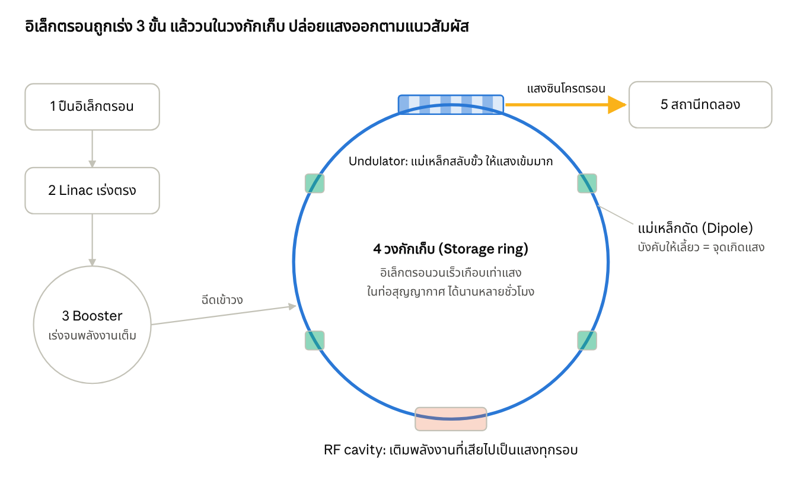
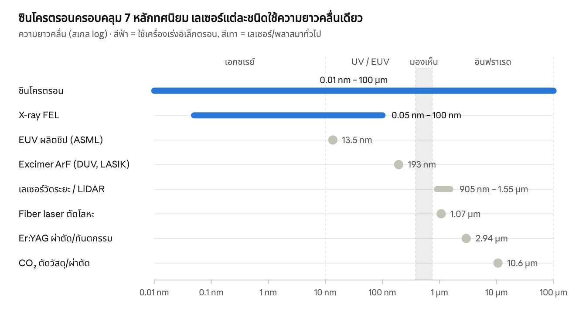
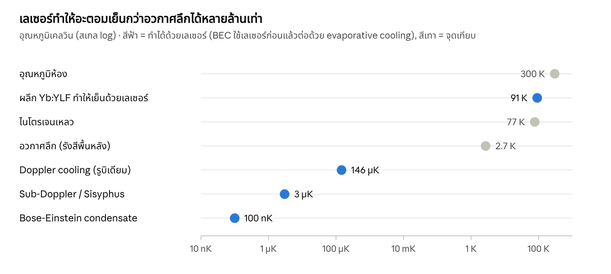

ซินโครตรอนทำงานอย่างไร และต่างจากเลเซอร์ทั่วไปแค่ไหน
สรุปสั้น
ซินโครตรอนคือเครื่องที่เร่งอนุภาคมีประจุให้เร็วเกือบเท่าแสง แล้วใช้แม่เหล็กบังคับให้วิ่งวนเป็นวง ทุกครั้งที่อิเล็กตรอนถูกดัดให้เลี้ยว มันจะปล่อยแสงออกมาตามแนวสัมผัส เรียกว่า "แสงซินโครตรอน" ซึ่งสว่างกว่าหลอดเอกซเรย์ในโรงพยาบาลนับล้านเท่าและครอบคลุมตั้งแต่อินฟราเรดถึงรังสีเอกซ์
CERN (LHC) ใช้หลักการเดียวกัน คือเป็นซินโครตรอนเหมือนกัน แต่เร่งโปรตอนเพื่อชนกัน ไม่ได้เอาแสงมาใช้ แสงที่ออกมาถือเป็นพลังงานที่สูญเสีย
ต้องเป็นวงกลม เพราะอนุภาควนผ่านจุดเร่งเดิมได้หลายล้านรอบ และเก็บลำอนุภาคไว้ใช้ได้หลายชั่วโมง
วงต้องใหญ่ เพราะแม่เหล็กมีความแรงจำกัด อนุภาคยิ่งพลังงานสูงยิ่งเลี้ยวยาก และวงเล็กทำให้อิเล็กตรอนเสียพลังงานไปเป็นแสงมากเกินไป
ต่างจากเลเซอร์ ตรงที่แสงซินโครตรอนเกิดจากอิเล็กตรอนอิสระที่ถูกดัดทาง ได้สเปกตรัมกว้างและเลือกความยาวคลื่นได้ ส่วนเลเซอร์เกิดจากการปล่อยแสงแบบกระตุ้นในวัสดุ ได้ความยาวคลื่นเดียวที่คมและพุ่งตรง
ข้อเข้าใจผิดที่พบบ่อย เครื่อง EUV ของ ASML ในโรงงานชิปไม่ได้ใช้ซินโครตรอน แต่ใช้เลเซอร์ยิงหยดดีบุกให้เป็นพลาสมา ซินโครตรอนใช้ในงานวิจัย ตรวจวัด และผลิตชิ้นส่วนจิ๋วแบบ LIGA
ตัวเลขในเอกสารนี้เป็นค่าโดยประมาณจากความรู้ทั่วไป ยังไม่ได้ตรวจกับเอกสารต้นทางทีละค่า
ซินโครตรอนทำงานอย่างไร
หัวใจคือกฎฟิสิกส์ข้อเดียว: ประจุไฟฟ้าที่ถูกเร่ง (รวมถึงถูกบังคับให้เปลี่ยนทิศ) จะปล่อยคลื่นแม่เหล็กไฟฟ้าออกมา ถ้าอิเล็กตรอนวิ่งเร็วใกล้แสง แสงนั้นจะพุ่งเป็นลำแคบไปข้างหน้าและมีพลังงานสูงถึงระดับรังสีเอกซ์

ผังหลักการของแหล่งกำเนิดแสงซินโครตรอน · ไม่ตามสัดส่วนจริง
ปืนอิเล็กตรอน ให้ความร้อนกับแคโทดจนอิเล็กตรอนหลุดออกมา
Linac (เครื่องเร่งเชิงเส้น) ใช้สนามไฟฟ้าความถี่วิทยุ (RF) ผลักอิเล็กตรอนเป็นกลุ่ม ๆ ให้เร็วขึ้น
Booster เป็นวงเล็กที่เร่งต่อจนได้พลังงานเป้าหมาย (เช่น 1.2 GeV ที่สถาบันวิจัยแสงซินโครตรอน โคราช)
วงกักเก็บ (Storage ring) มีแม่เหล็ก 3 แบบ: แม่เหล็กดัด (Dipole) ให้เลี้ยว, Quadrupole/Sextupole บีบโฟกัสลำไม่ให้กระจาย, และ Undulator/Wiggler ที่สลับขั้วให้อิเล็กตรอนส่ายไปมาเพื่อปล่อยแสงเข้มขึ้นมาก ส่วน RF cavity เติมพลังงานคืนทุกรอบ
Beamline และสถานีทดลอง รับแสงที่พุ่งออกตามแนวสัมผัสวง ผ่านโมโนโครเมเตอร์เพื่อเลือกความยาวคลื่นที่ต้องการ แล้วยิงใส่ตัวอย่าง
คำว่า "ซินโครตรอน" มาจากการที่สนามแม่เหล็กและความถี่ RF ต้อง ซิงโครไนซ์ กับพลังงานของอนุภาค: เมื่ออนุภาคมีพลังงานสูงขึ้น แม่เหล็กต้องแรงขึ้นตามเพื่อให้รัศมีวงคงที่
ทำไมต้องวิ่งเป็นวงกลม และทำไมวงต้องใหญ่ขนาดนั้น
เป็นวงกลมเพราะใช้เครื่องเร่งชุดเดิมซ้ำได้ไม่จำกัด เครื่องเร่งเส้นตรงให้พลังงานได้ครั้งเดียวต่อความยาวหนึ่งเมตร ถ้าอยากได้พลังงานสูงมากต้องสร้างยาวหลายกิโลเมตร แต่พอดัดเป็นวง อนุภาควนผ่าน RF cavity ตัวเดิมได้หลายล้านรอบต่อวินาที เก็บลำอนุภาคไว้ใช้ได้หลายชั่วโมง และส่งแสงให้สถานีทดลองรอบวงได้พร้อมกันหลายสิบจุด
เหตุผลที่ 1: แม่เหล็กมีเพดาน รัศมีการเลี้ยวขึ้นกับโมเมนตัมหารด้วยสนามแม่เหล็ก
ρ [m] ≈ 3.336 × p [GeV/c] ÷ B [T]
แม่เหล็กไฟฟ้าทั่วไปทำได้ราว 1.5 เทสลา ส่วนแม่เหล็กตัวนำยิ่งยวดของ LHC ที่เย็นถึง 1.9 K ทำได้ราว 8.3 เทสลา โปรตอน 6.8 TeV จึงต้องมีรัศมีเลี้ยวประมาณ 2.7 กิโลเมตร บวกทางตรงสำหรับเครื่องมือแล้วเส้นรอบวงจึงยาว 26.7 กม. ถ้าอยากได้พลังงานสูงขึ้นโดยไม่ขยายวง ต้องรอแม่เหล็กที่แรงกว่าเดิม
เหตุผลที่ 2: ยิ่งเลี้ยวแคบ ยิ่งเสียพลังงานเป็นแสง พลังงานที่อิเล็กตรอนสูญเสียต่อรอบเพิ่มตามกำลังสี่ของพลังงาน
U₀ [keV] ≈ 88.5 × E⁴ [GeV] ÷ ρ [m]
| ตัวอย่าง | พลังงาน | รัศมีเลี้ยว | เสียพลังงานต่อรอบ (ประมาณ) |
|---|---|---|---|
| อิเล็กตรอน สถาบันฯ โคราช | 1.2 GeV | ~2.8 m | ~66 keV (0.006%) |
| อิเล็กตรอน LEP ที่ CERN (ปิดปี 2000) | 104.5 GeV | ~3.1 km | ~3.4 GeV (3%) |
| โปรตอน LHC | 6,800 GeV | ~2.8 km | ~7 keV (แทบศูนย์) |
จะเห็นว่า LEP เสียพลังงาน 3% ทุกรอบแม้วงจะใหญ่ถึง 27 กม. จึงเร่งอิเล็กตรอนต่อไม่ไหว CERN จึงเปลี่ยนมาใช้โปรตอนซึ่งหนักกว่าอิเล็กตรอน 1,836 เท่า ทำให้ปล่อยแสงน้อยกว่าราว 10 ล้านล้านเท่าที่พลังงานเท่ากัน สิ่งที่เป็น "ขยะ" ของคนทำ collider คือ "ผลผลิต" ของคนทำแหล่งกำเนิดแสง
เครื่องเร่งอนุภาคที่ CERN ใช้หลักการเดียวกันไหม
ใช่ LHC คือซินโครตรอนที่ใหญ่ที่สุดในโลก แม่เหล็กดัด แม่เหล็กโฟกัส และ RF cavity ทำงานแบบเดียวกัน แม้แต่ลำดับการเร่งก็คล้ายกัน: Linac4 → PS Booster → PS → SPS → LHC เหมือน ปืน → Linac → Booster → วงกักเก็บ ที่ต่างคือ เป้าหมายและอนุภาค
| เครื่อง | อนุภาค | พลังงาน | เส้นรอบวง | เอาไปทำอะไร |
|---|---|---|---|---|
| Siam Photon Source (สถาบันวิจัยแสงซินโครตรอน นครราชสีมา) | อิเล็กตรอน | 1.2 GeV | ~81 m | แสงสำหรับงานวิจัยและอุตสาหกรรม |
| Siam Photon Source II (โครงการใหม่ EEC ระยอง) | อิเล็กตรอน | 3 GeV | ~320 m | แสงเอกซ์เรย์พลังงานสูงขึ้น |
| ESRF-EBS (ฝรั่งเศส) | อิเล็กตรอน | 6 GeV | ~844 m | แหล่งเอกซเรย์ความสว่างสูง |
| SPring-8 (ญี่ปุ่น) | อิเล็กตรอน | 8 GeV | ~1.4 km | เอกซเรย์พลังงานสูงมาก |
| LEP (CERN, 1989–2000) | อิเล็กตรอน + พอซิตรอน | สูงสุด 104.5 GeV | 26.7 km | ชนอนุภาค (แสงคือการสูญเสีย) |
| LHC (CERN, ในอุโมงค์เดิมของ LEP) | โปรตอน | 6.8 TeV ต่อลำ | 26.7 km | ชนกันเพื่อหาอนุภาคใหม่ เช่น Higgs boson |
ความต่างสำคัญอีกข้อ: LHC มีสองลำวิ่งสวนทางกันแล้วบังคับให้ชนกันที่เครื่องตรวจจับ 4 จุด (ATLAS, CMS, ALICE, LHCb) ส่วนแหล่งแสงซินโครตรอนมีลำเดียวไม่ชนกัน และออกแบบให้ลำเล็กและนิ่งที่สุดเพื่อให้แสงคมชัด
ใช้ทำอะไรบ้าง
แสงซินโครตรอนเป็น "กล้องจุลทรรศน์ระดับอะตอม" มากกว่าเครื่องมือผลิต งานส่วนใหญ่คือการดูโครงสร้างและส่วนผสมของสิ่งที่เล็กจนกล้องอื่นมองไม่เห็น
| ด้าน | ใช้ทำอะไร | ตัวอย่าง |
|---|---|---|
| การแพทย์: ออกแบบยา | หาโครงสร้าง 3 มิติของโปรตีนด้วยการเลี้ยวเบนของรังสีเอกซ์ (X-ray crystallography) แล้วออกแบบยาให้พอดีกับจุดทำงาน | ยาต้าน HIV กลุ่ม protease inhibitor, โครงสร้างไวรัสโควิด |
| การแพทย์: ภาพถ่ายและการรักษา (งานวิจัย) | เอกซเรย์แบบ phase-contrast เห็นเนื้ออ่อนชัดขึ้นที่ปริมาณรังสีต่ำ, การฉายรังสีแบบ microbeam | การตรวจเต้านมที่ซินโครตรอน Elettra (อิตาลี), งานวิจัยที่ ESRF |
| การแพทย์: ฉายอนุภาครักษามะเร็ง | ใช้ซินโครตรอนเร่งโปรตอนหรือไอออนคาร์บอนไปยิงก้อนมะเร็งตรง ๆ (ใช้ตัวอนุภาค ไม่ได้ใช้แสง) | HIT ไฮเดิลแบร์ก, CNAO อิตาลี, HIMAC ญี่ปุ่น |
| การผลิตชิป: วิจัย EUV | ทดสอบกระจกสะท้อน หน้ากาก (mask) และสารไวแสง (photoresist) ด้วยแสง 13.5 nm ที่ปรับความยาวคลื่นได้แม่นยำ | ห้องปฏิบัติการ PTB ที่ BESSY II (เยอรมนี), ALS (สหรัฐฯ) |
| การผลิตชิป: ตรวจวิเคราะห์ | ถ่ายภาพ 3 มิติภายในชิปโดยไม่ต้องผ่า, วัดความเครียดในซิลิคอน, ตรวจฟิล์มบางและสิ่งปนเปื้อนระดับอะตอม | ภาพ 3 มิติของชิปประมวลผลด้วย X-ray ptychography ที่ PSI (สวิตเซอร์แลนด์) |
| การผลิตชิ้นส่วนจิ๋ว | X-ray lithography แบบ LIGA สร้างโครงสร้างสูงแต่ผนังตรงเป๊ะ สำหรับ MEMS, เฟืองจิ๋ว, หัวฉีด | บีมไลน์ LIGA ที่สถาบันวิจัยแสงซินโครตรอน โคราช |
| พลังงานและวัสดุ | ดูแบตเตอรี่ขณะชาร์จจริง ตัวเร่งปฏิกิริยา โซลาร์เซลล์ | แบตเตอรี่ลิเทียมไอออน, ตัวเร่งผลิตไฮโดรเจน |
| เกษตร อาหาร อัญมณี | ดูสารอาหารในเมล็ด ตรวจแหล่งที่มาและการปรับปรุงสีอัญมณี | งานข้าว ยางพารา พลอย ที่สถาบันฯ โคราช |
| โบราณคดีและศิลปะ | มองทะลุชั้นสีโดยไม่ทำลายชิ้นงาน | ภาพที่ซ่อนอยู่ใต้ภาพวาดของ Van Gogh, ม้วนกระดาษโบราณ |
เรื่องที่คนมักเข้าใจผิด:
เครื่อง EUV ของ ASML ที่ TSMC/Samsung/Intel ใช้ผลิตชิป 3 nm สร้างแสง 13.5 nm ด้วยการยิงเลเซอร์ CO₂ ใส่หยดดีบุกหลอมเหลวประมาณ 50,000 หยดต่อวินาที (laser-produced plasma) ไม่ใช่ซินโครตรอน เพราะต้องใส่ได้ในตู้เดียวและตั้งได้หลายสิบเครื่องในโรงงาน
มีงานวิจัยและบริษัทสตาร์ทอัพ (เช่นที่ KEK ญี่ปุ่น) ที่ศึกษาการใช้ Free-Electron Laser บนเครื่องเร่งอิเล็กตรอนเป็นแหล่ง EUV กำลังสูงสำหรับทั้งโรงงาน แต่ยังเป็นแนวคิดในอนาคต
การฉายรังสีรักษามะเร็งในโรงพยาบาลทั่วไปใช้ Linac ขนาดห้องเดียว ไม่ใช้ซินโครตรอน
ต่างจากเลเซอร์แบบอื่น ๆ อย่างไร
ต่างกันที่ "ต้นกำเนิดแสง" ซินโครตรอนใช้อิเล็กตรอนอิสระที่ถูกแม่เหล็กดัดทาง จึงได้แสงหลายสีปนกันเหมือนแสงอาทิตย์แต่สว่างมาก แล้วค่อยกรองเอาความยาวคลื่นที่ต้องการ ส่วนเลเซอร์ใช้อิเล็กตรอนที่ผูกอยู่กับอะตอมกระโดดลงระดับพลังงานที่ตายตัว (stimulated emission) จึงได้สีเดียว คลื่นเฟสตรงกัน (coherent) และสร้างในกล่องเล็ก ๆ ได้

ค่าโดยประมาณจากความรู้ทั่วไป · เลเซอร์หลายชนิดมีรุ่นที่ใช้ความยาวคลื่นอื่นด้วย
| ซินโครตรอน | X-ray FEL | เลเซอร์วัดระยะ | เลเซอร์ตัดวัสดุ | เลเซอร์ผ่าตัด | |
|---|---|---|---|---|---|
| ต้นกำเนิดแสง | อิเล็กตรอนอิสระถูกแม่เหล็กดัด | อิเล็กตรอนอิสระใน undulator ยาว แสงขยายตัวเอง | ไดโอดเลเซอร์สารกึ่งตัวนำ | ใยแก้วเจือสารหายาก หรือก๊าซ CO₂ | ก๊าซ CO₂, ผลึก Er:YAG / Nd:YAG, ก๊าซ excimer |
| ความยาวคลื่น | กว้างมาก เลือกได้ | ปรับได้ด้วยพลังงานอิเล็กตรอน | 905 nm หรือ 1550 nm | 1.07 µm (fiber), 10.6 µm (CO₂) | เลือกตามเนื้อเยื่อที่ต้องการให้ดูดกลืน |
| ความพุ่งตรง/เฟสตรง | พุ่งตรงมาก เฟสตรงเพียงบางส่วน | เฟสตรงเกือบเต็มที่ (เป็นเลเซอร์จริง) | เฟสตรง | เฟสตรง | เฟสตรง |
| กำลัง | สว่างมากแต่กำลังต่อบีมไลน์เพียงระดับมิลลิวัตต์ถึงวัตต์ | พัลส์สั้นระดับเฟมโตวินาที กำลังยอดสูงมาก | มิลลิวัตต์ (ปลอดภัยต่อตา Class 1) | หลายพันวัตต์ต่อเนื่อง | หน่วยวัตต์ถึงหลายสิบวัตต์ |
| หลักทำงาน | แสงทะลุหรือสะท้อนจากอะตอม บอกโครงสร้าง | ถ่ายภาพโมเลกุลเดี่ยวและปฏิกิริยาเคมีแบบสโลว์โมชัน | จับเวลาแสงไป-กลับ (time of flight) หาร 2 × ความเร็วแสง | โฟกัสความร้อนจนวัสดุหลอมหรือระเหย | น้ำในเนื้อเยื่อดูดแสง ตัดพร้อมห้ามเลือด, excimer ตัดพันธะโมเลกุลกระจกตา |
| ขนาด | อาคารเส้นรอบวง 80 m ถึง 1.4 km | อุโมงค์ยาวถึง 3.4 km (European XFEL) | ใส่ในมือถือได้ | ตู้เครื่องจักร | เครื่องในห้องผ่าตัด |
X-ray FEL คือจุดที่สองโลกมาเจอกัน ใช้เครื่องเร่งอิเล็กตรอนเหมือนซินโครตรอน แต่ให้ลำอิเล็กตรอนวิ่งผ่าน undulator ยาวมากจนแสงที่ปล่อยออกมาไปจัดระเบียบอิเล็กตรอนให้เป็นแผ่นบาง ๆ แล้วปล่อยแสงพร้อมเฟสกัน ได้ "เลเซอร์เอกซเรย์" ที่เลเซอร์ธรรมดาทำไม่ได้ เพราะไม่มีกระจกหรือสารตัวกลางที่ทำงานที่ความยาวคลื่นนั้นได้
เกร็ดที่น่าสนใจ: เลเซอร์ ArF 193 nm ที่ใช้ทำ LASIK แก้สายตาสั้น เป็นแหล่งแสงชนิดเดียวกับเครื่อง DUV lithography ที่พิมพ์ชิปส่วนใหญ่ในโลก
เลเซอร์ที่ทำให้เย็นลง (Laser cooling)
ใช่ เลเซอร์ทำให้เย็นได้จริง และเย็นที่สุดในจักรวาลที่มนุษย์รู้จัก อุณหภูมิคือความเร็วที่อะตอมสั่นหรือวิ่งไปมาแบบสุ่ม ถ้าเรา "เบรก" อะตอมให้ช้าลงได้ อะตอมก็เย็นลง แสงมีโมเมนตัม ทุกครั้งที่อะตอมดูดโฟตอนจะถูก "ผลัก" เบา ๆ เลเซอร์ที่ใช้จึงเป็นเลเซอร์กำลังต่ำระดับมิลลิวัตต์ที่ปรับความถี่แม่นยำมาก ตรงข้ามกับเลเซอร์ตัดโลหะหลายพันวัตต์

ค่าโดยประมาณจากความรู้ทั่วไป · ตัวเลขขึ้นกับชนิดอะตอมและการทดลอง
ทำงานอย่างไร (Doppler cooling)
ตั้งความถี่เลเซอร์ให้ ต่ำกว่าที่อะตอมชอบดูดเล็กน้อย (red-detuned) อะตอมที่อยู่นิ่งจึงแทบไม่ดูดแสง
อะตอมที่วิ่งสวนเข้าหาลำแสง เห็นความถี่สูงขึ้นจากปรากฏการณ์ดอปเพลอร์ (เหมือนเสียงรถพยาบาลที่แหลมขึ้นตอนวิ่งเข้าหาเรา) จนตรงกับที่มันชอบ จึงดูดโฟตอนและถูกผลักสวนทิศการเคลื่อนที่
อะตอมคายโฟตอนออกมาในทิศสุ่ม แรงผลักจากการคายจึงหักล้างกันเอง เหลือแต่แรงเบรก ทำซ้ำหลายหมื่นครั้งต่อวินาที
ยิงเลเซอร์ 6 ลำจากทุกทิศ (บน ล่าง ซ้าย ขวา หน้า หลัง) อะตอมจะเหมือนตกอยู่ในน้ำเชื่อม เรียกว่า optical molasses เติมสนามแม่เหล็กแบบไล่ระดับเข้าไปก็กักอะตอมไว้กลางห้องได้ด้วย เรียกว่า MOT (magneto-optical trap)
วิธีนี้ได้รางวัลโนเบลฟิสิกส์ปี 1997 (Steven Chu, Claude Cohen-Tannoudji, William Phillips) ต่อมาใช้เลเซอร์เย็นก่อนแล้ว "ระเหย" อะตอมตัวที่ร้อนทิ้งจนได้ Bose-Einstein condensate ครั้งแรกปี 1995 (โนเบลปี 2001)
เลเซอร์ทำให้ของแข็งเย็น (optical refrigeration) ใช้หลักคนละแบบ: ผลึกที่เจืออิตเทอร์เบียม (Yb) ดูดแสงที่พลังงานต่ำกว่าแสงที่มันเรืองออกมาเล็กน้อย ส่วนต่างของพลังงานดึงมาจากการสั่นของผลึก (anti-Stokes fluorescence) แสงจึงขนความร้อนออกไป ทำได้ถึงราว 90 K โดยไม่มีชิ้นส่วนเคลื่อนไหวและไม่สั่น
| ใช้ทำอะไร | ทำไมต้องเย็น | ตัวอย่าง |
|---|---|---|
| นาฬิกาอะตอม | อะตอมที่เกือบนิ่งให้สัญญาณความถี่ที่คมกว่า นาฬิกาคลาดน้อยกว่า 1 วินาทีในหลายร้อยล้านปี | นาฬิกาน้ำพุซีเซียมที่กำหนดเวลามาตรฐาน, นาฬิกาแสงสตรอนเทียม ซึ่งอยู่เบื้องหลังเวลา GPS และเครือข่ายมือถือ |
| คอมพิวเตอร์ควอนตัม | ไอออนหรืออะตอมที่เย็นสั่นน้อย เก็บสถานะ qubit ได้นานและควบคุมได้แม่น | Trapped-ion (Quantinuum, IonQ), อะตอมใน optical tweezers (QuEra, Pasqal, Atom Computing) |
| ฟิสิกส์พื้นฐาน | ทำ BEC และศึกษาสสารควอนตัม | การทำให้แอนติไฮโดรเจนเย็นด้วยเลเซอร์ที่ CERN (การทดลอง ALPHA, 2021) |
| เซ็นเซอร์แม่นยำสูง | อะตอมเย็นใช้เป็นไม้บรรทัดวัดแรงโน้มถ่วงและการหมุน | เครื่องวัดแรงโน้มถ่วงแบบอะตอม สำรวจใต้ดิน, ระบบนำทางที่ไม่พึ่ง GPS |
| ทำความเย็นแบบไม่สั่น | ไม่มีคอมเพรสเซอร์หรือสารทำความเย็น | งานวิจัยทำเย็นเซ็นเซอร์อินฟราเรดบนดาวเทียม |
เทียบกับเรื่องซินโครตรอน: ทั้งคู่ใช้ "ปฏิสัมพันธ์ระหว่างแสงกับอนุภาค" แต่กลับทิศกัน ซินโครตรอนเอาพลังงานจากอนุภาคที่เร็วมากมาเป็นแสง ส่วน laser cooling ใช้แสงดึงพลังงานออกจากอะตอมที่เกือบหยุดนิ่ง
Simulation และแหล่งอ้างอิง
ห้องควบคุมซินโครตรอน (Simulation) ลองเลือก Siam Photon, ESRF, LEP หรือ LHC แล้วปรับพลังงานและสนามแม่เหล็ก จะเห็นรัศมีวงที่ต้องใช้ พลังงานที่เสียเป็นแสงต่อรอบ และสเปกตรัมที่เลื่อนไปมาเทียบกับเลเซอร์แต่ละชนิด ลองปิด RF cavity เพื่อดูอิเล็กตรอนหมดพลังงานจนชนผนังท่อ
ตัวเลขทั้งหมดในเอกสารนี้และใน Simulation มาจากสูตรมาตรฐานและความรู้ทั่วไป ยังไม่ได้เปิดตรวจกับเอกสารต้นทาง จุดที่ควรตรวจต่อถ้าจะอ้างอิง:
สถาบันวิจัยแสงซินโครตรอน (องค์การมหาชน) — slri.or.th: ข้อมูล Siam Photon Source และโครงการ Siam Photon Source II
CERN — home.cern: ข้อมูล LHC, LEP และลำดับเครื่องเร่ง (accelerator complex)
ESRF — esrf.fr และ SPring-8 — spring8.or.jp
สูตรรัศมีเลี้ยวและการสูญเสียพลังงาน: X-ray Data Booklet (Lawrence Berkeley National Laboratory) หัวข้อ Synchrotron Radiation
Laser cooling: เอกสารประกอบรางวัลโนเบลฟิสิกส์ 1997 และ 2001 ที่ nobelprize.org